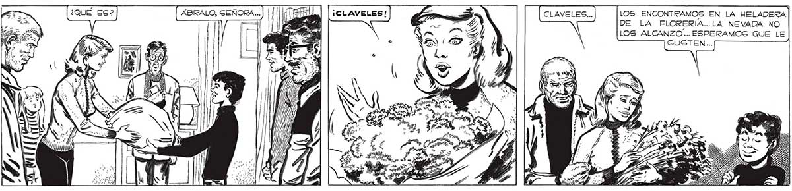
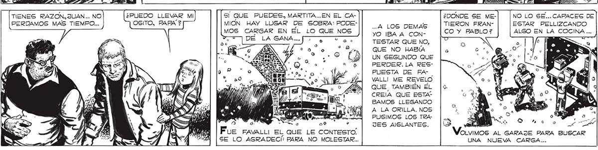

¡JUAN! SOY UNA TONTA... NO..ES QUE SON UNOS CLAVELES TAN HERMOSOS. CLAVELES.. ¡CREÍ QUE YA NUNCA VOLVERÍA A VER FLORES! ..DE ELENA, LO MISMO QUE LA IDEA DE PABLO Y LOS OTROS DE TRAERLE FLORES, DEMOSTRABAN MEJOR QUE NADA 4 QUE LO PEOR HA1 BA PASADO YA PA RA NOSOTROS: VOLVÍAMOS A SER SEA RES HUMANOS, CON A NUESTRAS FLAQUEZAS, NUESTRAS DEBF LIDADES, NUESTRAS Ñ PEQUEÑAS COSAS... a No supe QUÉ DECIRLE: LAS LÁGRIMAS.. TIENES RAZON, JUAN... NO ¿PUEDO LLEVAR MI Sí QUE PUEDES, MARTITA...EN EL CAPERDAMOS MAS TIEMPO... OSITO, PAPA? MION HAY LUGAR DE SOBRA: PODE- A LOGS DEMAS MOS CARGAR EN EL LO QUE NOS YO IBA A CONA DÉ LA GANA. CT. TESTAR QUE NO, QUE NO HABÍA UN SEGUNDO QUE PERDER. LA RES: PUESTA DE FAVALL! ME REVELO QUE TAMBIÉN EL CREÍA QUE ESTA? BAMOS LLEGANDO A LA ORILLA. NOS PUSIMOS LOS TRAJES AISLANTES. Fue FAVALLI EL QUE LE CONTESTO, SE LO AGRADECÍ: PARA NO MOLESTAR. NO TENIAN POR QUÉ HABERSE MOLESTADO, MUCHACHOS... TODAVIA NO HEMOS LLEGADO A LA ZONA DE SEGURIDAD... SI NO NOS APURAMOS NO LLEGARE MOS NUNCA... AYÚDENME A LLEVAR TODO ESTO AL ENCONTRAMOS EN LA HELADERA 327 LA FLORERIA...LA NEVADA NO ALCANZO... ESPERAMOS QUE LE GUSTEN... ¿DONDE SE ME- NO LO SE...CAPACES DE TIERON FRAN- ESTAR PELLIZCANDO CO Y PABLO? ALGO EN LA COCINA ... va, : s E Bea Lo de LA WVoLvimos AL GARAJE PARA BUSCAR UNA NUEVA CARGA...

